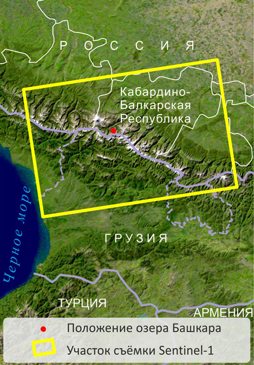
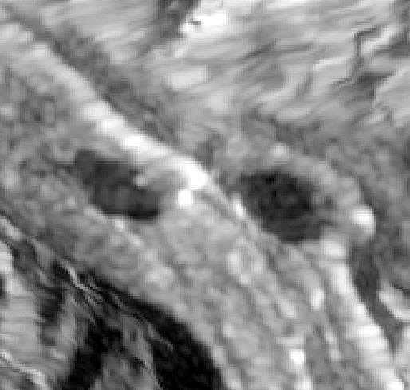
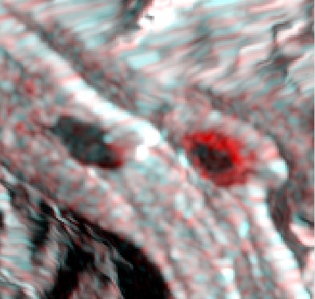
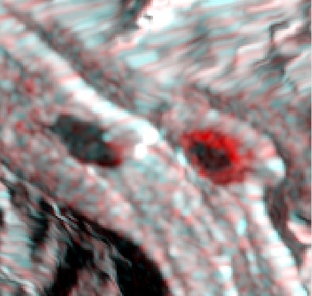
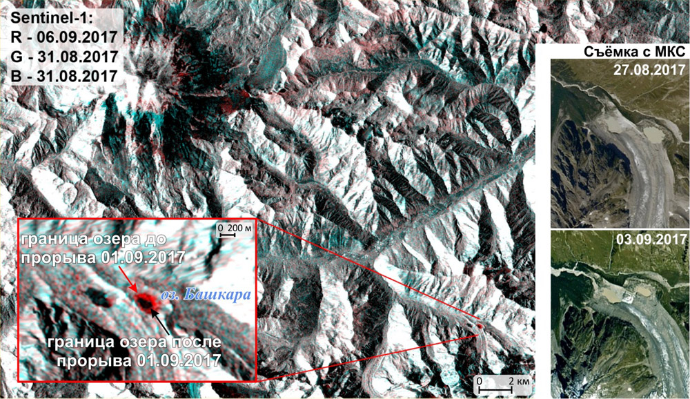

Расположенное в Приэльбрусье озеро Башкара образовалось в конце 1930-х гг. между правой береговой
мореной и краем одноимённого ледника. Прорыв озера в 1958-59 гг. стал причиной катастрофических селей. В
последующие годы наблюдалось (в том числе и по космическим снимкам) постепенное заполнение озера водой. 1 сентября 2017
г. вновь произошёл прорыв озера, вызвавший разрушительный селевой поток.
Одни из первых материалов дистанционного наблюдения этого явления были получены 2-3 сентября с борта
Международной космической станции в рамках эксперимента "Ураган". Спустя несколько дней после прорыва озера (6 сентября) этот
участок был снят радиолокатором со спутника Sentinel-1B.
Для выявления изменений границ озера, произошедших в результате его прорыва, использованы два
разновременных радиолокационных снимка: первый получен 31.08.2017 г. со спутника Sentinel-1A, а второй -
06.09.2017 г. со спутника Sentinel-1B.
Предварительная обработка снимков включала следующие этапы: корегистрацию разновременных
изображений, фильтрацию спекл-шума и ортотрансформирование с использованием цифровой модели рельефа
SRTM.
Составлено многовременное цветное синтезированное изображение, в котором красный цвет присвоен
снимку, полученному после прорыва озера (06.09.2017 г.), а зелёный и синий - снимку, полученному за день
до этого события (31.08.2017 г.).
  

Слева - снимок Sentinel-1A, 31.08.2017 г., в центре - Sentinel-1B, 06.09.2017 г., справа -
их цветовой синтез (R - 06.09.2017, G - 31.08.2017, B - 31.08.2017)
Наименьшую яркость на радиолокационных снимках имеют водная поверхность (из-за зеркального отражения
радиоволн), а именно два озера в центре, и склоны, обращённые в сторону от радиолокатора (т.е. области
радиолокационной тени), расположенные в нижней части изображения. Остальные участки изображаются
различными оттенками серого. Наибольшую яркость имеют склоны, обращённые в сторону радиолокатора.
При выбранном варианте цветового синтеза участки красного цвета, окаймляющие озеро Башкара (справа),
соответствуют изменившейся площади зеркала воды (площадь озера сократилась приблизительно на 65%).

Наверх